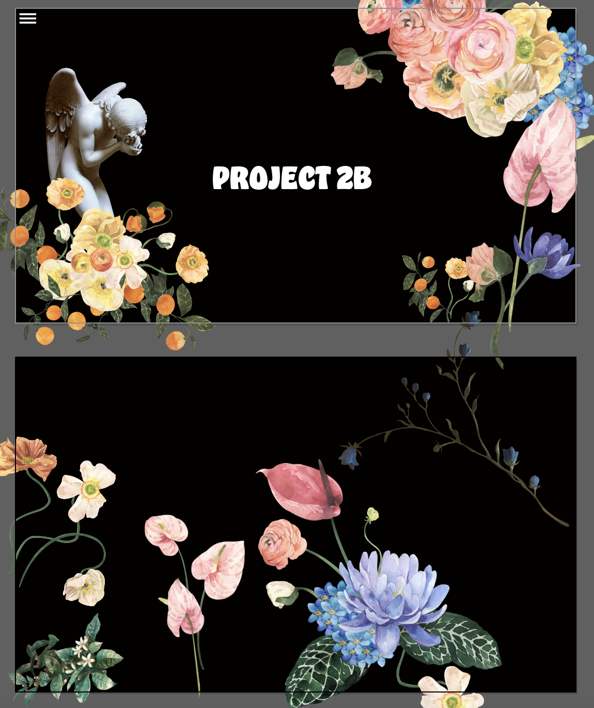
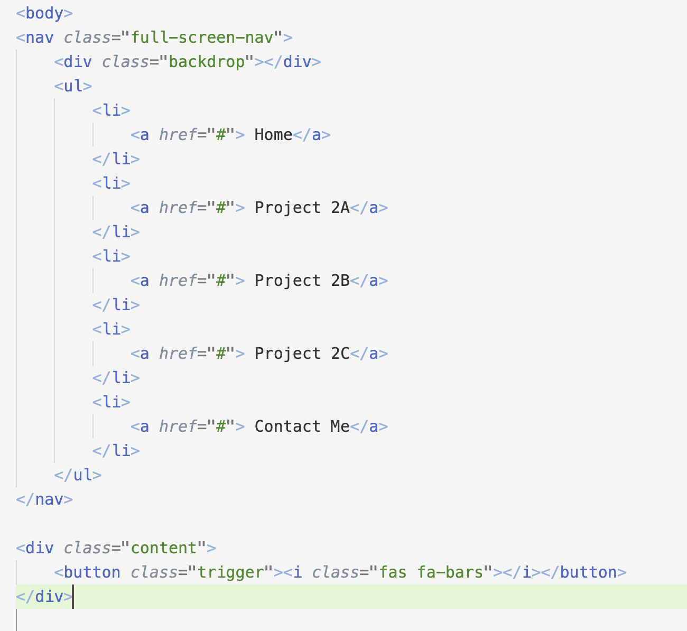
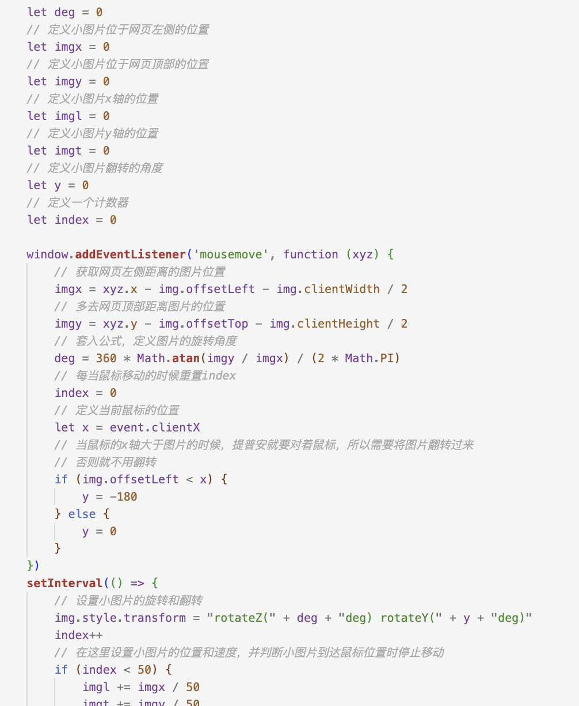

I first made the collage-style effect I wanted in Illustrator, and there will be a menu bar in the upper left corner.
I first imported all the images and then typed them.I want to make a shrinking menu bar, and links to other pages will appear when clicked. I searched for similar tutorials on the Internet and found that javascript needs to be introduced. So I created a new folder named js in the folder and then used the code on the website to make changes. I want to change the original style, change the background to black, and display 3 lines. and changed the font size to achieve the final goal
And after finish buiding the basics,I started to add small elements to make the pager more interactive such as a tracking cursor img.This has done by javascript.
